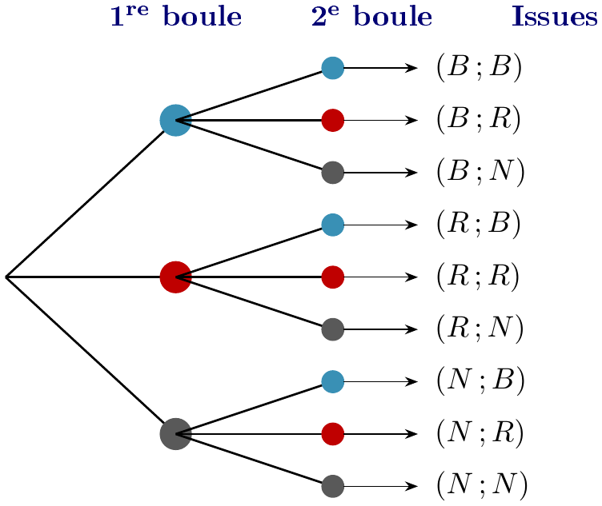

Chapitre V : Variables aléatoires
Terminale STMG · Chapitre 7 — Variables aléatoires · cours de Frederik de Peyrelongue
I. Variable aléatoire et loi de probabilité
1.1 Variable aléatoire
Soit l'expérience aléatoire : « On lance un dé à six faces et on regarde le résultat. »
L'ensemble de toutes les issues possibles $\Omega=\{1\,;2\,;3\,;4\,;5\,;6\}$ s'appelle l'univers des possibles.
On considère l'événement $A$ : « On obtient un résultat pair. » On a donc $A=\{2\,;4\,;6\}$.
On considère l'événement élémentaire $E$ : « On obtient un 3 ». On a donc $E=\{3\}$.
- Chaque résultat d'une expérience aléatoire s'appelle une issue.
- L'univers des possibles est l'ensemble des issues d'une expérience aléatoire.
- Un événement est un sous-ensemble de l'univers des possibles.
- Un événement élémentaire est un événement contenant une seule issue.
Une variable aléatoire $X$ est une fonction définie sur un univers $\Omega$ et à valeurs dans $\R$.
Si $x_{1},x_{2},\dots,x_{r}$ désignent les valeurs prises par $X$, on note « $X=x_{i}$ » l'événement « $X$ prend la valeur $x_{i}$ ».
Dans l'expérience précédente, on considère le jeu suivant :
- si le résultat est pair, on gagne $2$ euros ;
- si le résultat est $1$, on gagne $3$ euros ;
- si le résultat est $3$ ou $5$, on perd $4$ euros.
On a défini une variable aléatoire $X$ sur $\Omega=\{1\,;2\,;3\,;4\,;5\,;6\}$ qui peut prendre les valeurs $2$, $3$ ou $-4$.
On a donc : $X(1)=3$, $X(2)=2$, $X(3)=-4$, $X(4)=2$, $X(5)=-4$, $X(6)=2$.
1.2 Loi de probabilité
Soit une variable aléatoire $X$ définie sur un univers $\Omega$ et prenant les valeurs $x_{1},x_{2},\dots,x_{n}$.
La loi de probabilité de $X$ associe à toute valeur $x_{i}$ la probabilité $\prob(X=x_{i})$.
On considère la variable aléatoire $X$ définie dans l'exemple précédent.
Chaque issue du lancer de dé est équiprobable et égale à $\dfrac{1}{6}$.
La probabilité que la variable aléatoire prenne la valeur $2$ est égale à $\dfrac{1}{6}+\dfrac{1}{6}+\dfrac{1}{6}=\dfrac{1}{2}$.
On note : $\prob(X=2)=\dfrac{1}{2}$. De même : $\prob(X=3)=\dfrac{1}{6}$ et $\prob(X=-4)=\dfrac{1}{6}+\dfrac{1}{6}=\dfrac{1}{3}$.
On peut résumer les résultats dans un tableau :
| $x_{i}$ | $-4$ | $2$ | $3$ |
| $\prob(X=x_{i})$ | $\dfrac{1}{3}$ | $\dfrac{1}{2}$ | $\dfrac{1}{6}$ |
Ce tableau résume la loi de probabilité de la variable aléatoire $X$.
Remarque. $\prob(X=x_{i})$ peut se noter $p_{i}$.
La somme de toutes les probabilités $\prob(X=x_{i})$ doit toujours être égale à $1$.
Démonstration.
Dans l'exemple traité plus haut :
II. Répétitions d'expériences identiques et indépendantes
On considère une expérience aléatoire qui consiste à répéter $n$ fois une même expérience, appelée épreuve.
Lorsque l'issue d'une épreuve ne dépend pas des issues des épreuves précédentes, on dit que ces épreuves sont indépendantes.
Une urne contient cinq boules indiscernables : deux bleues, deux rouges et une noire.
L'expérience aléatoire consiste à tirer au hasard une boule, noter sa couleur, la remettre dans l'urne, puis tirer une seconde boule et noter sa couleur.
- Les $2$ tirages sont effectués dans les mêmes conditions (puisqu'on remet la boule).
- L'issue du 2nd tirage ne dépend pas de l'issue du 1er tirage.
L'expérience consiste donc à répéter deux épreuves identiques et indépendantes.
Probabilité lors d'une épreuve :
2.1 Construction d'un arbre pondéré
On dessine les branches qui représentent les résultats obtenus lors de la répétition des deux épreuves.
On inscrit sur chaque branche la probabilité de l'événement correspondant lors d'une épreuve.

2.2 Vocabulaire
- Chaque segment de l'arbre est une branche.
- Un point à l'intersection de $2$ branches est un nœud : il correspond à une étape de l'expérience.
- Une issue est une liste ordonnée de résultats, représentée par un chemin.
Ainsi, le chemin $\to R\to N$ représente l'issue $(R\,;N)$.
2.3 Règles d'utilisation d'un arbre pondéré
- Loi des chemins : la probabilité d'une issue est le produit des probabilités inscrites sur le chemin représentant cette issue.
- Loi des nœuds : la somme des probabilités inscrites sur les branches issues d'un même nœud vaut $1$.
- La probabilité d'un événement $A$ est la somme des probabilités des issues associées aux chemins qui réalisent $A$.
Par exemple :
Soit $U$ l'événement « Les deux boules sont de la même couleur ». $U$ est réalisé par les issues $(B\,;B)$, $(R\,;R)$ et $(N\,;N)$. Donc
Soit $Z$ la variable aléatoire qui indique le nombre de boules rouges obtenues. Déterminer la loi de probabilité de $Z$, ainsi que $E(Z)$.
$Z$ est définie sur $\Omega=\{0\,;1\,;2\}$.
| Valeurs $z_{i}$ | $0$ | $1$ | $2$ | total |
| $\prob(Z=z_{i})$ | $\dfrac{9}{25}$ | $\dfrac{12}{25}$ | $\dfrac{4}{25}$ | $1$ |
III. Espérance, variance, écart-type
3.1 Espérance
Soit une variable aléatoire $X$ définie sur un univers $\Omega$ et prenant les valeurs $x_{1},x_{2},\dots,x_{n}$. La loi de probabilité de $X$ associe à toute valeur $x_{i}$ la probabilité $p_{i}=\prob(X=x_{i})$.
L'espérance mathématique de la loi de probabilité de $X$ est :
Il s'agit de l'espérance de gain du jeu, c'est-à-dire qu'en moyenne on gagne environ $0{,}17$ euros.
Remarques.
- On parlera d'un jeu équilibré ou équitable si l'espérance de gain est nulle.
- L'espérance est la moyenne de la série des $x_{i}$ pondérés par les probabilités $p_{i}$.
En effet :
En répétant un grand nombre de fois l'expérience, la loi des grands nombres nous permet d'affirmer que les fréquences se rapprochent des probabilités théoriques. La moyenne des résultats se rapproche donc de l'espérance de la loi de probabilité.
L'espérance est donc la moyenne que l'on peut espérer si l'on répète l'expérience un grand nombre de fois.
3.2 Variance, écart-type
Soit une variable aléatoire $X$ de loi de probabilité $(x_{i}\,;p_{i})$, $i$ allant de $1$ à $n$.
La variance de la loi de probabilité de $X$ est :
L'écart-type de la loi de probabilité de $X$ est :
Il indique la dispersion des gains autour du « gain moyen » (l'espérance) : cela signifie qu'avec une espérance proche de $0{,}17$, le risque de perdre de l'argent est important.
donc
Soit une variable aléatoire $X$ définie sur un univers $\Omega$, et $a$ et $b$ deux nombres réels.
Démonstrations.